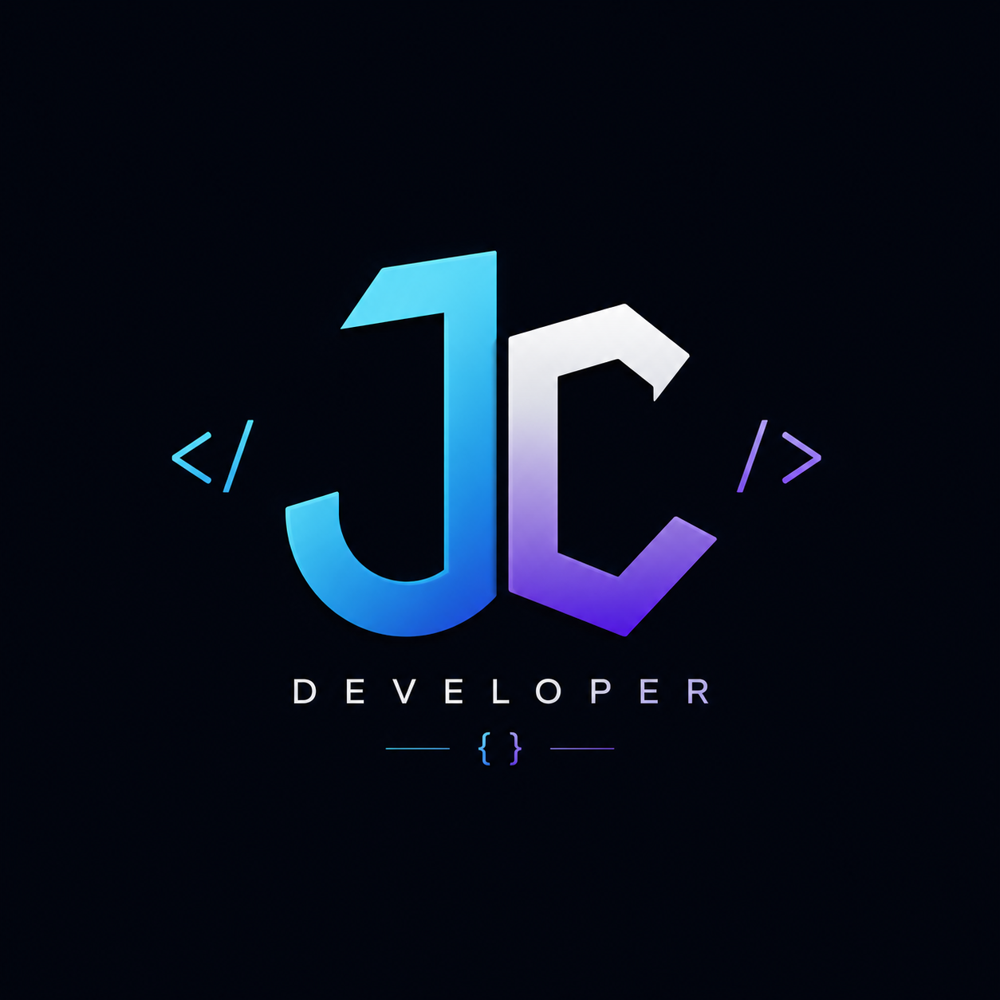

Especializado en automatización de infraestructura, DevOps y SRE para entornos cloud de alto rendimiento. Construyo infraestructuras resilientes, escalables y seguras en AWS y GCP.

GCP (EKS, EC2, S3, IAM, CloudFront, VPC), GCP (GKE, Cloud Run, IAM)
Terraform (custom modules, remote state, drift detection), Terragrunt, CloudFormation.
Kubernetes (K8s), Helm, Docker, Containerd. Administración de clusters EKS/GKE.
GitHub Actions, ArgoCD, GitLab CI. Automatización con Python, Go y Bash.
Prometheus, Grafana, Datadog, AWS CloudWatch, Open Telemetry.
Service Mesh (Istio), Secrets Management (HashiCorp Vault), IAM, TLS/SSL, DNS.
Desarrollé una solución automatizada en Python, integrada con GitHub Actions y Slack, diseñada para alertar y corregir automáticamente desviaciones de configuración en infraestructuras gestionadas por Terraform.
Español (Nativo) | Inglés (Avanzado / Nivel C1)